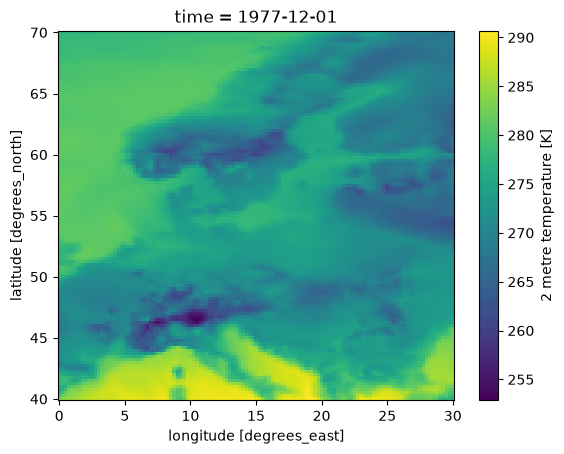
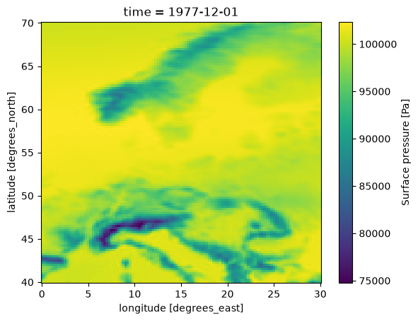
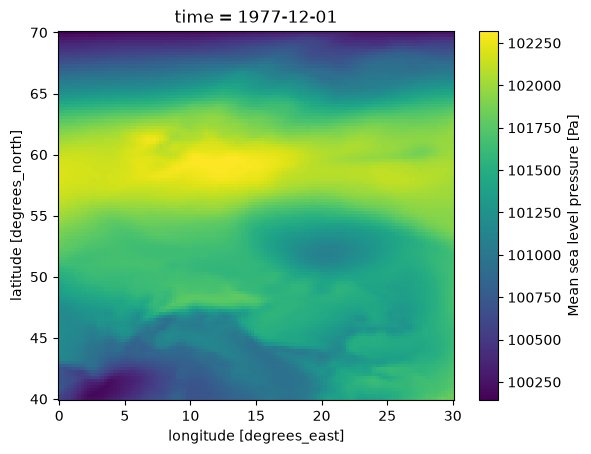
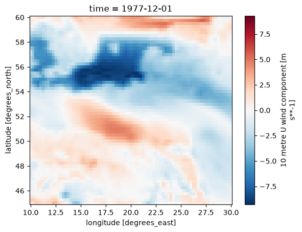
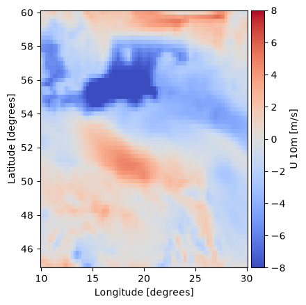
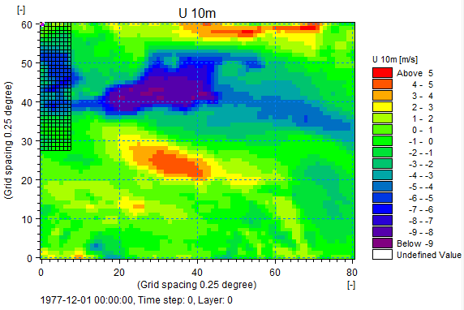

NetCDF to dfs2#
Weather forcing#
The first example uses data from ECMWF ERA5 obtained from CDS
A common format for multidimensional data is NetCDF.
An excellent python package for working with NetCDF in Python is Xarray.
To work with NetCDF data first we need to install the netcdf4 and xarray packages!
Opening a NetCDF file with Xarray returns an xarray.Dataset
import numpy as np
import pandas as pd
import xarray as xr
import mikeio
ds = xr.open_dataset("data/era5_small.nc")
ds
<xarray.Dataset> Size: 10MB
Dimensions: (time: 12, latitude: 121, longitude: 121)
Coordinates:
* time (time) datetime64[ns] 96B 1977-12-01 ... 1977-12-03T18:00:00
* latitude (latitude) float32 484B 70.0 69.75 69.5 69.25 ... 40.5 40.25 40.0
* longitude (longitude) float32 484B 0.0 0.25 0.5 0.75 ... 29.5 29.75 30.0
Data variables:
u10 (time, latitude, longitude) float64 1MB ...
v10 (time, latitude, longitude) float64 1MB ...
d2m (time, latitude, longitude) float64 1MB ...
t2m (time, latitude, longitude) float64 1MB ...
msl (time, latitude, longitude) float64 1MB ...
sp (time, latitude, longitude) float64 1MB ...
tcc (time, latitude, longitude) float64 1MB ...
Attributes:
Conventions: CF-1.6
history: 2021-09-21 06:03:31 GMT by grib_to_netcdf-2.20.0: /opt/ecmw...One of the datam variables is the t2m (Air temperature at 2m above the ground) which we can access in two different ways:
Using the string “t2m”
Or as a property of the Dataset object
.t2m
ds["t2m"]
<xarray.DataArray 't2m' (time: 12, latitude: 121, longitude: 121)> Size: 1MB
[175692 values with dtype=float64]
Coordinates:
* time (time) datetime64[ns] 96B 1977-12-01 ... 1977-12-03T18:00:00
* latitude (latitude) float32 484B 70.0 69.75 69.5 69.25 ... 40.5 40.25 40.0
* longitude (longitude) float32 484B 0.0 0.25 0.5 0.75 ... 29.5 29.75 30.0
Attributes:
units: K
long_name: 2 metre temperatureds.t2m
<xarray.DataArray 't2m' (time: 12, latitude: 121, longitude: 121)> Size: 1MB
[175692 values with dtype=float64]
Coordinates:
* time (time) datetime64[ns] 96B 1977-12-01 ... 1977-12-03T18:00:00
* latitude (latitude) float32 484B 70.0 69.75 69.5 69.25 ... 40.5 40.25 40.0
* longitude (longitude) float32 484B 0.0 0.25 0.5 0.75 ... 29.5 29.75 30.0
Attributes:
units: K
long_name: 2 metre temperatureTo select the first timestep, we can use the xarray.Dataset.isel method.
ds0 = ds.isel(time=0)
ds0
<xarray.Dataset> Size: 821kB
Dimensions: (latitude: 121, longitude: 121)
Coordinates:
* latitude (latitude) float32 484B 70.0 69.75 69.5 69.25 ... 40.5 40.25 40.0
* longitude (longitude) float32 484B 0.0 0.25 0.5 0.75 ... 29.5 29.75 30.0
time datetime64[ns] 8B 1977-12-01
Data variables:
u10 (latitude, longitude) float64 117kB ...
v10 (latitude, longitude) float64 117kB ...
d2m (latitude, longitude) float64 117kB ...
t2m (latitude, longitude) float64 117kB ...
msl (latitude, longitude) float64 117kB ...
sp (latitude, longitude) float64 117kB ...
tcc (latitude, longitude) float64 117kB ...
Attributes:
Conventions: CF-1.6
history: 2021-09-21 06:03:31 GMT by grib_to_netcdf-2.20.0: /opt/ecmw...The dataset from the first timestep is also a Dataset, except it no longer has a time dimension.
To plot a map of the air temperature we can use select the t2m property and call the plot method.
ds0.t2m.plot()
<matplotlib.collections.QuadMesh at 0x7f59e6774740>

Pressure#
Atmospheric pressure comes in different flavors.
Surface pressure (sp) is the pressure at ground level, i.e. following the terrain.
In the following plot you can clearly see the decrease in surface pressure with altitude in areas with mountains.
This is NOT the variable used by MIKE 21 FM HD.
ds0.sp.plot()
<matplotlib.collections.QuadMesh at 0x7f59e567f800>

MIKE 21 FM HD expects the atmospheric pressure reduced to Mean Sea Level. (msl)
In the following plot the pressure field has a much smaller range, since the variation with altitude have been removed.
ds0.msl.plot()
<matplotlib.collections.QuadMesh at 0x7f59e5749850>

Wind#
The wind velocity components U,V at 10m above the ground, are found in the two data variables, u10 and v10
ds0.u10.long_name
'10 metre U wind component'
ds0.v10.long_name
'10 metre V wind component'
Convert to dfs2#
Sub-region#
In this case the NetCDF file covers a much larger area, than is required for our modelling work, so first step is to create a spatial subset to match our Area of Interest.
Since the latitude dimension is ordered in decreasing order in this dataset, the slice has to go from high to low.
ds_aoi = ds.sel(longitude=slice(10,30),
latitude=slice(60,45)) # N -> S
ds_aoi
<xarray.Dataset> Size: 3MB
Dimensions: (time: 12, latitude: 61, longitude: 81)
Coordinates:
* time (time) datetime64[ns] 96B 1977-12-01 ... 1977-12-03T18:00:00
* latitude (latitude) float32 244B 60.0 59.75 59.5 59.25 ... 45.5 45.25 45.0
* longitude (longitude) float32 324B 10.0 10.25 10.5 ... 29.5 29.75 30.0
Data variables:
u10 (time, latitude, longitude) float64 474kB ...
v10 (time, latitude, longitude) float64 474kB ...
d2m (time, latitude, longitude) float64 474kB ...
t2m (time, latitude, longitude) float64 474kB ...
msl (time, latitude, longitude) float64 474kB ...
sp (time, latitude, longitude) float64 474kB ...
tcc (time, latitude, longitude) float64 474kB ...
Attributes:
Conventions: CF-1.6
history: 2021-09-21 06:03:31 GMT by grib_to_netcdf-2.20.0: /opt/ecmw...Make a plot to check that the area is the one we expect.
ds_aoi.isel(time=0).u10.plot()
<matplotlib.collections.QuadMesh at 0x7f59e0f56cf0>

Time#
Now we are ready to convert this data to dfs2.
First step is to create a time axis, which can be understood by MIKE IO.
time = pd.DatetimeIndex(ds.time)
time
DatetimeIndex(['1977-12-01 00:00:00', '1977-12-01 06:00:00',
'1977-12-01 12:00:00', '1977-12-01 18:00:00',
'1977-12-02 00:00:00', '1977-12-02 06:00:00',
'1977-12-02 12:00:00', '1977-12-02 18:00:00',
'1977-12-03 00:00:00', '1977-12-03 06:00:00',
'1977-12-03 12:00:00', '1977-12-03 18:00:00'],
dtype='datetime64[ns]', freq=None)
Then create the spatial axis
g = mikeio.Grid2D(x=ds_aoi.longitude, y=ds_aoi.latitude[::-1], projection="LONG/LAT")
g
<mikeio.Grid2D>
x: [10, 10.25, ..., 30] (nx=81, dx=0.25)
y: [45, 45.25, ..., 60] (ny=61, dy=0.25)
projection: LONG/LAT
The next step is to collect the variables that we need, and at the same time do unit conversion where it is necessary. In this case for pressure and temperature.
das = [
mikeio.DataArray(np.flip(ds_aoi.msl.values, axis=1) / 100.0,
time=time, geometry=g,
item=mikeio.ItemInfo("MSLP", mikeio.EUMType.Pressure, mikeio.EUMUnit.hectopascal)),
mikeio.DataArray(np.flip(ds_aoi.u10.values, axis=1),
time=time, geometry=g,
item=mikeio.ItemInfo("U 10m", mikeio.EUMType.Wind_Velocity, mikeio.EUMUnit.meter_per_sec)),
mikeio.DataArray(np.flip(ds_aoi.v10.values, axis=1),
time=time, geometry=g,
item=mikeio.ItemInfo("V 10m", mikeio.EUMType.Wind_Velocity, mikeio.EUMUnit.meter_per_sec)),
mikeio.DataArray(np.flip(ds_aoi.t2m.values, axis=1) - 273.15,
time=time, geometry=g,
item=mikeio.ItemInfo("Temperature", mikeio.EUMType.Temperature, mikeio.EUMUnit.degree_Celsius))
]
my_ds = mikeio.Dataset(das)
my_ds
<mikeio.Dataset>
dims: (time:12, y:61, x:81)
time: 1977-12-01 00:00:00 - 1977-12-03 18:00:00 (12 records)
geometry: Grid2D (ny=61, nx=81)
items:
0: MSLP <Pressure> (hectopascal)
1: U 10m <Wind Velocity> (meter per sec)
2: V 10m <Wind Velocity> (meter per sec)
3: Temperature <Temperature> (degree Celsius)
Let’s plot to confirm that it looks alright
my_ds.U_10m.plot(cmap="coolwarm",vmin=-8,vmax=8);

The dimensions for at DFS2 are expected to be (t, y, x), which matches the ones used by this dataset.
This convention is recommended by the CF convention
ds.Conventions
'CF-1.6'
ds.u10.dims
('time', 'latitude', 'longitude')
my_ds.dims
('time', 'y', 'x')
The final step is to write the dataset to a dfs2 file. The Dataset already contains all the information needed.
my_ds.to_dfs("era5_aoi.dfs2")
Screenshot of U 10m from MIKE Zero
